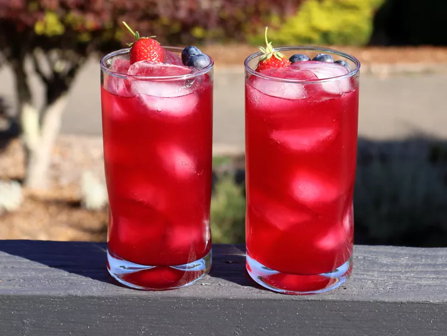

Combine strawberries, blueberries, and 1/2 of the sugar in a bowl. Use a potato masher to lightly crush berries until all blueberries have broken open.
Use a sharp vegetable peeler to peel off just the yellow zest from 6 lemons; add lemon zest to the berry-sugar mixture.
Pour remaining sugar into the bowl and mix thoroughly. Cover and let sit on the counter for 2 to 6 hours, stirring occasionally, or refrigerate overnight if you prefer.
Bring 5 cups water to boil in a saucepan, transfer in berry mixture. Immediately turn off heat, and let sit for 5 minutes, stirring a few times.
Set a fine mesh strainer over a heatproof bowl, and pour berry mixture through the strainer; press out liquid gently. Let cool to room temperature, about 20 minutes.
Cut the 6 zested lemons in half, and squeeze the juice (through a strainer to catch the seeds) into the bowl.
Taste, and juice in more lemons as desired. You will have another chance to adjust the final flavor after the lemonade is cold.
Transfer lemonade into a pitcher and refrigerate until fully chilled, about 1 hour. Give the lemonade a final taste, and adjust with more fresh lemon juice or sugar if necessary. Fill glasses with ice to serve.
Home